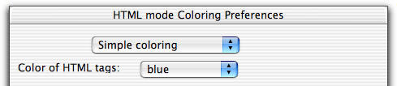

Coloring of your HTML code is highly customizable. You can choose the colors you want for HTML tags, attributes, strings, JavaScript keywords, CSS keywords, and JavaScript and CSS comments.
The coloring in HTML mode is a little bit more complex than Alpha is designed for. Alpha was originally designed to color programming code. HTML documents contains both code and ordinary text and Alpha can't tell which words are code and which are ordinary text, when it colors your documents. Therefore the coloring will not always be perfect.
In the submenu there are seven extra colors ... . You can use these colors to define your own favorite colors for your HTML documents. By default these seven colors are undefined, but as soon as you give them a value they appear in the coloring preference dialog box, where you can choose the colors you wants for the keywords.
By default the coloring of HTML tags is like this:
<IMG SRC="fig.gif">
Tags are colored blue, attributes magenta and strings green. For the coloring of the attributes to work the attribute values must be put inside quotes. If an attribute is written WIDTH=246 Alpha thinks WIDTH=246 is one single word and therefore doesn't find the word WIDTH= which it is supposed to color. To reduce this problem there is a function in the submenu of the HTML Utilities menu. This functions goes through your document and put quotes around all attributes.
The coloring can be customized in the coloring preferences dialog box, which you find in the submenu of the HTML menu. At the top of this dialog box there is a popup menu, where you can choose between Simple coloring and Complex coloring.

When simple coloring is selected the tags are colored all blue:
<IMG SRC="fig.gif">
This can be a better choice on lowend machines with slow graphics.
When complex coloring is chosen there are a number of options to customize the coloring.
You can also customize the coloring in CSS and JavaScript modes. See the pages documenting these modes.